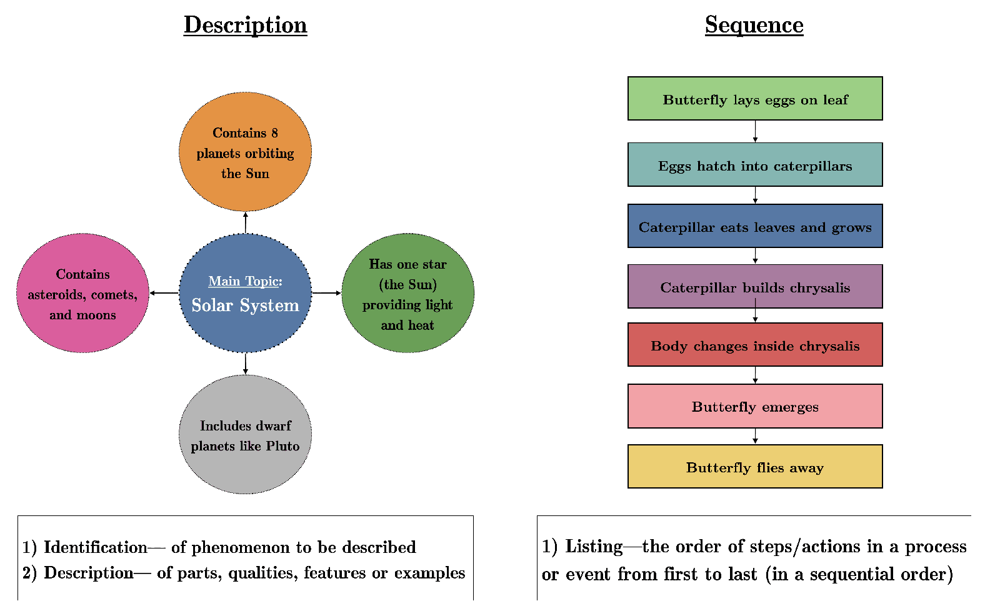
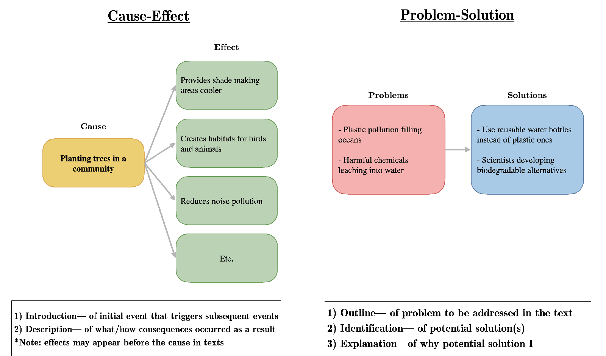
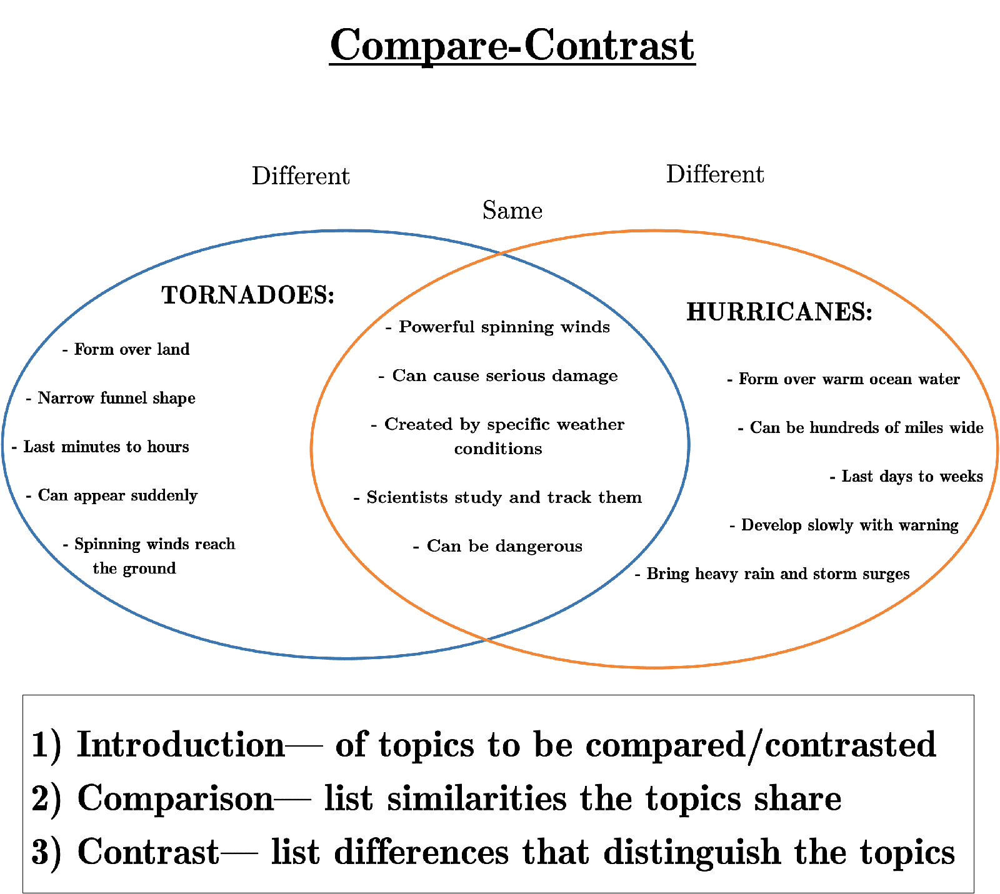

Free Learning Program
Remember when you learned something because you wanted to, not because you had to?
That feeling of discovery, excitement, and genuine curiosity is what drives true mastery—and it's what we nurture at A.C.K. Academy's Free Learning program.
✨ Interest Form! ✨What Makes Free Learning Different
Free Learning bridges the gap between structured education and child-led discovery. We provide daily materials tailored to your child's interests while building critical thinking skills through our Free Learning Framework.
Free Learning is designed for curious kids in grades 3–8 who can read and write independently—or are just beginning to do so with a little support. The goal is to help your child learn how to learn—so they can explore, think independently, and confidently teach themselves anything they’re curious about.
You can read more about Free Learning here: Blog/Free Learning
Some Curious Questions Worth Exploring
🏙️ How do skyscrapers in NYC stay standing?
🧭 How do animals know where to migrate?
🌌 What would happen if gravity stopped working for a second?
🤖 How do robots know what to do?
🌉 How were the NYC bridges like the Brooklyn Bridge built without modern machines?
✈️ Why don’t airplanes fall even though they’re so heavy?
🕊️ Where do all the pigeons in NYC sleep at night?
🧠 Why do we sometimes forget things we know?
⏳ How did people know what time it was before clocks?
🌳 What did NYC look like before people built anything here?
🎨 Can you hear colors or see music?
🗺️ Could you make a map of NYC using only sound? What would you hear in each borough?
…and anything your child can wonder, imagine, or be curious about!
How It Works
Monday-Thursday:
Your child receives daily printable SMART worksheets that cover reading materials, and writing prompts through Google Classroom.
Weekend:
A 30 minute video call with Columbia University mentor where they discuss that week's materials with your child, making connections and planning next steps.
Note: The curriculum constantly changes and developing depth in material becomes natural.
Frameworks for Exploration



What Students Do
In our Free Learning program, students work one-on-one with a dedicated mentor from Columbia University who guide them through a personalized learning journey based on their interests and curiosity. Unlike traditional education, students:
- Select their own learning topics based on genuine interest and curiosity
- Break down the topic of interest into manageable pieces they can master at their own pace
- Review knowledge systematically to ensure long-term retention
- Build connections between different subjects as their knowledge expands
- Prioritize what's most important to learn based on their goals and interests
Our Free Learning approach allows students to digest knowledge in small portions, making even the most challenging subjects accessible and enjoyable.
✨ Interest Form! ✨A.C.K. Academy is an independent academic initiative and is not affiliated with Columbia University as an official program.
Scholarships Available:
Every student deserves access to quality education regardless of financial circumstances. Limited scholarships are available for families demonstrating financial need. To learn more about scholarships, please email: info@ackacademy.org with subject line "Scholarship Application."
Sponsor a Student:
Make a difference in a child's education journey by sponsoring a scholarship student. Your contribution directly funds a student's learning plan. To learn more about sponsoring a student, please email: info@ackacademy.org with subject line "Sponsor a Student."